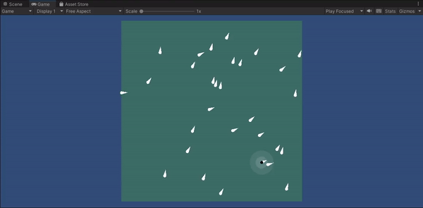
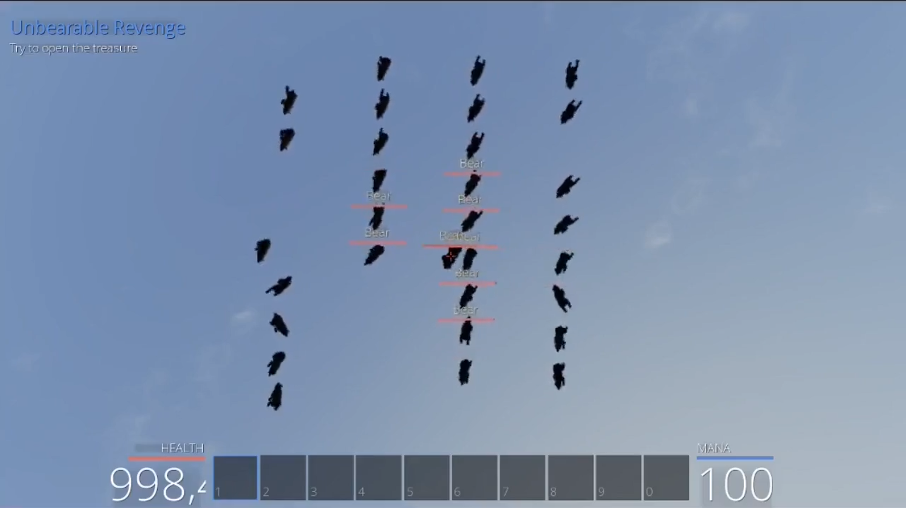
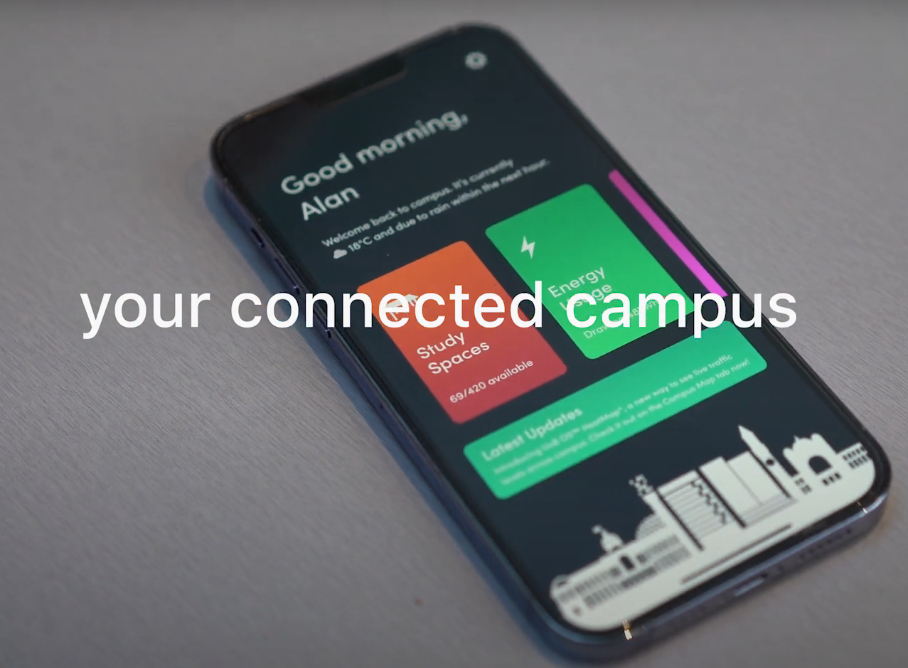

Some of my university projects:
Final Year Project - An Investigation into Drone Swarms & Swarm Intelligence

FlappyBear - A hack library for the game PwnIsland

Geofindr - A word search style map searching game

Vision Gallery - A photo gallery website with image anaylsis including emotion, colour content, and location
UoB OS - Concept for a University-wide Internet of things system
